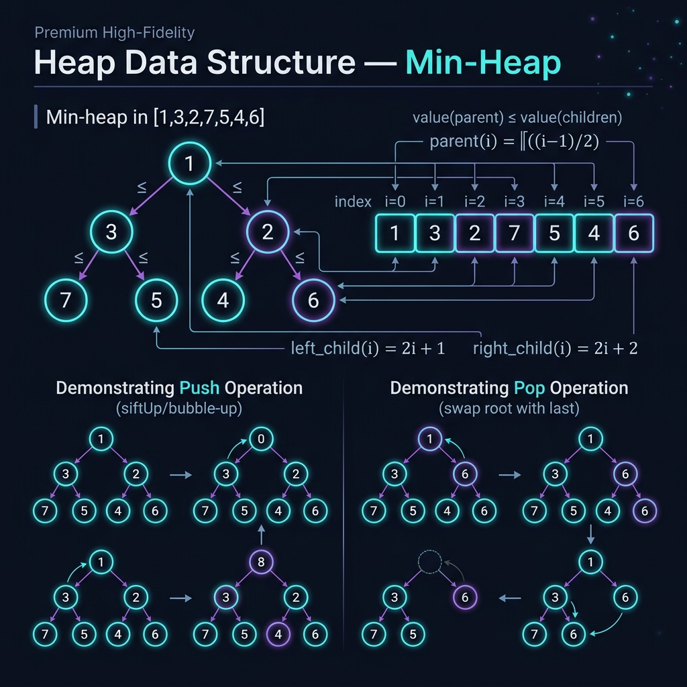
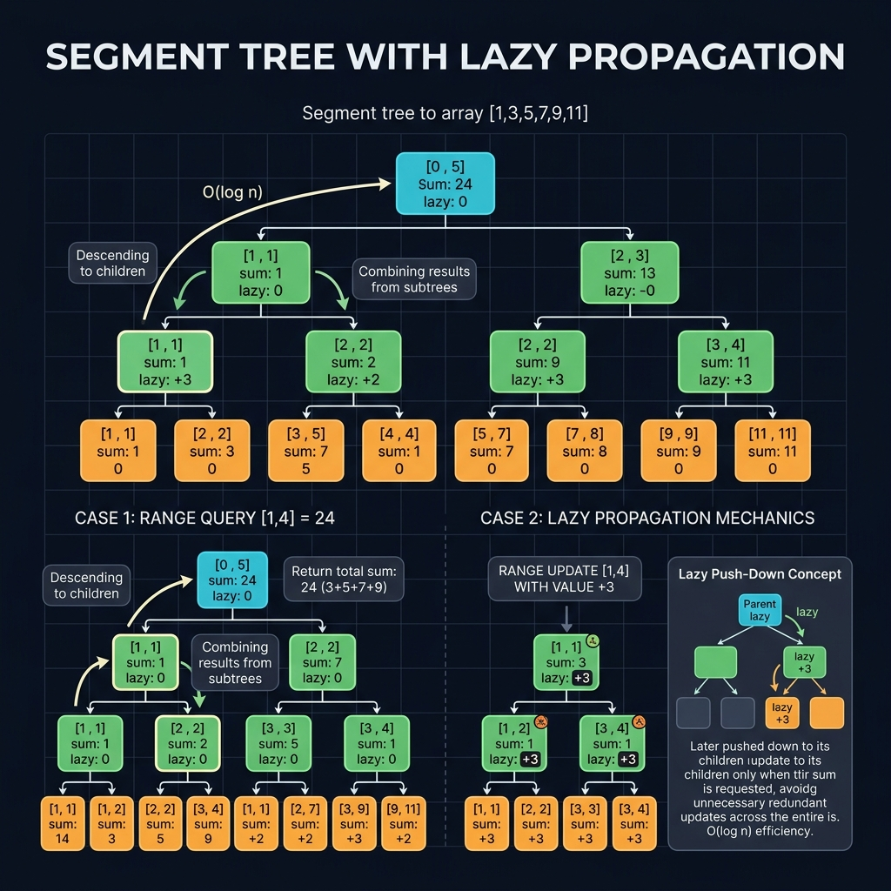
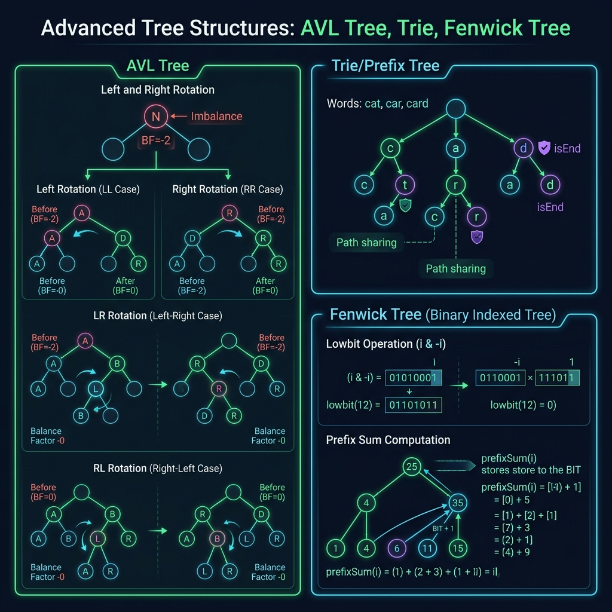

Hướng dẫn toàn diện về các cấu trúc dữ liệu dạng cây trong Go — từ traversal cơ bản đến Segment Tree với Lazy Propagation, AVL Tree và Trie. Mỗi phần bao gồm định nghĩa, sơ đồ trực quan, code mẫu production-ready và phân tích độ phức tạp.
Định nghĩa: Tree Traversal là quá trình thăm (visit) tất cả các nút trong cây đúng một lần theo một thứ tự nhất định. Có 4 phương pháp chính: Inorder (LNR), Preorder (NLR), Postorder (LRN) và Level Order (BFS). Mỗi phương pháp phù hợp với từng bài toán khác nhau như in BST theo thứ tự, sao chép cây, hoặc tính toán biểu thức.
| Thuật toán | Thứ tự thăm | Time | Space | Ứng dụng |
|---|---|---|---|---|
| Inorder | Left → Node → Right | O(n) | O(h) | In BST theo thứ tự tăng dần |
| Preorder | Node → Left → Right | O(n) | O(h) | Serialize/Clone cây |
| Postorder | Left → Right → Node | O(n) | O(h) | Xóa cây, tính toán biểu thức |
| Level Order | Từng tầng trái→phải | O(n) | O(w) | BFS, shortest path |
h = chiều cao cây, w = chiều rộng tầng lớn nhất
package tree import "fmt" // TreeNode định nghĩa nút của cây nhị phân tổng quát. type TreeNode[T any] struct { Val T Left *TreeNode[T] Right *TreeNode[T] } // ────────────────────────────────────────────────────────────── // INORDER TRAVERSAL — Đệ quy (Left → Node → Right) // Kết quả với BST: danh sách đã sắp xếp tăng dần // ────────────────────────────────────────────────────────────── func InorderRecursive[T any](node *TreeNode[T], result *[]T) { if node == nil { return } InorderRecursive(node.Left, result) // thăm cây con trái *result = append(*result, node.Val) // thăm nút hiện tại InorderRecursive(node.Right, result) // thăm cây con phải } // InorderIterative — Inorder không dùng đệ quy, dùng explicit stack. // Ưu điểm: tránh stack overflow với cây rất sâu. func InorderIterative[T any](root *TreeNode[T]) []T { var ( result []T stack []*TreeNode[T] curr = root ) for curr != nil || len(stack) > 0 { // Đi hết sang trái for curr != nil { stack = append(stack, curr) curr = curr.Left } // Pop và thăm curr = stack[len(stack)-1] stack = stack[:len(stack)-1] result = append(result, curr.Val) // Chuyển sang nhánh phải curr = curr.Right } return result } // ────────────────────────────────────────────────────────────── // PREORDER TRAVERSAL (Node → Left → Right) // Ứng dụng: serialize cây, copy cây, in đường dẫn file // ────────────────────────────────────────────────────────────── func PreorderIterative[T any](root *TreeNode[T]) []T { if root == nil { return nil } var result []T stack := []*TreeNode[T]{root} for len(stack) > 0 { node := stack[len(stack)-1] stack = stack[:len(stack)-1] result = append(result, node.Val) // Push right trước để left được xử lý trước (LIFO) if node.Right != nil { stack = append(stack, node.Right) } if node.Left != nil { stack = append(stack, node.Left) } } return result } // ────────────────────────────────────────────────────────────── // POSTORDER TRAVERSAL (Left → Right → Node) // Ứng dụng: xóa toàn bộ cây, tính giá trị biểu thức // ────────────────────────────────────────────────────────────── func PostorderIterative[T any](root *TreeNode[T]) []T { if root == nil { return nil } var result []T stack := []*TreeNode[T]{root} for len(stack) > 0 { node := stack[len(stack)-1] stack = stack[:len(stack)-1] // Prepend thay vì append (đảo kết quả) result = append([]T{node.Val}, result...) if node.Left != nil { stack = append(stack, node.Left) } if node.Right != nil { stack = append(stack, node.Right) } } return result } // ────────────────────────────────────────────────────────────── // LEVEL ORDER TRAVERSAL — BFS (Breadth-First Search) // Dùng queue; trả về [][]T (từng tầng riêng biệt) // ────────────────────────────────────────────────────────────── func LevelOrder[T any](root *TreeNode[T]) [][]T { if root == nil { return nil } var result [][]T queue := []*TreeNode[T]{root} for len(queue) > 0 { size := len(queue) level := make([]T, 0, size) for i := 0; i < size; i++ { node := queue[0] queue = queue[1:] // dequeue level = append(level, node.Val) if node.Left != nil { queue = append(queue, node.Left) } if node.Right != nil { queue = append(queue, node.Right) } } result = append(result, level) } return result } // ── DEMO ────────────────────────────────────────────────────── func main() { // Xây cây: 1 → (2 → (4, 5), 3 → (6, 7)) root := &TreeNode[int]{Val: 1, Left: &TreeNode[int]{Val: 2, Left: &TreeNode[int]{Val: 4}, Right: &TreeNode[int]{Val: 5}}, Right: &TreeNode[int]{Val: 3, Left: &TreeNode[int]{Val: 6}, Right: &TreeNode[int]{Val: 7}}, } fmt.Println("Inorder: ", InorderIterative(root)) // [4 2 5 1 6 3 7] fmt.Println("Preorder: ", PreorderIterative(root)) // [1 2 4 5 3 6 7] fmt.Println("Postorder: ", PostorderIterative(root)) // [4 5 2 6 7 3 1] fmt.Println("LevelOrder:", LevelOrder(root)) // [[1] [2 3] [4 5 6 7]] }
Định nghĩa: BST là cây nhị phân thỏa mãn: với mỗi nút N, tất cả nút ở cây con trái có giá trị nhỏ hơn N, tất cả nút ở cây con phải có giá trị lớn hơn N. Tính chất này cho phép tìm kiếm, thêm, xóa trong O(log n) trung bình. Trường hợp xấu nhất O(n) khi cây mất cân bằng (suy biến thành linked list).
package bst import "cmp" // BST là cây tìm kiếm nhị phân generic, yêu cầu T có thể so sánh (ordered). type BST[T cmp.Ordered] struct { root *node[T] size int } type node[T cmp.Ordered] struct { val T left, right *node[T] } // ── INSERT O(h) ─────────────────────────────────────────────── func (t *BST[T]) Insert(val T) { t.root = insertNode(t.root, val) t.size++ } func insertNode[T cmp.Ordered](n *node[T], val T) *node[T] { if n == nil { return &node[T]{val: val} } switch cmp.Compare(val, n.val) { case -1: n.left = insertNode(n.left, val) case 1: n.right = insertNode(n.right, val) // case 0: duplicate — bỏ qua (hoặc xử lý tuỳ nghiệp vụ) } return n } // ── SEARCH O(h) ─────────────────────────────────────────────── func (t *BST[T]) Search(val T) bool { n := t.root for n != nil { switch cmp.Compare(val, n.val) { case 0: return true case -1: n = n.left default: n = n.right } } return false } // ── DELETE O(h) ─────────────────────────────────────────────── // 3 trường hợp: // 1. Nút lá → xóa trực tiếp // 2. Nút có 1 con → thay bằng con // 3. Nút có 2 con → thay bằng in-order successor (min của cây con phải) func (t *BST[T]) Delete(val T) { t.root = deleteNode(t.root, val) t.size-- } func deleteNode[T cmp.Ordered](n *node[T], val T) *node[T] { if n == nil { return nil } switch cmp.Compare(val, n.val) { case -1: n.left = deleteNode(n.left, val) case 1: n.right = deleteNode(n.right, val) default: // tìm thấy nút cần xóa if n.left == nil { return n.right } // 0 hoặc 1 con phải if n.right == nil { return n.left } // 1 con trái // 2 con: tìm in-order successor (min của cây con phải) successor := minNode(n.right) n.val = successor.val n.right = deleteNode(n.right, successor.val) } return n } func minNode[T cmp.Ordered](n *node[T]) *node[T] { for n.left != nil { n = n.left } return n } // ── VALIDATE BST ────────────────────────────────────────────── // Kiểm tra một cây có phải BST hợp lệ không — O(n) func IsBST[T cmp.Ordered](root *node[T]) bool { return isValidBST(root, (*T)(nil), (*T)(nil)) } func isValidBST[T cmp.Ordered](n *node[T], minVal, maxVal *T) bool { if n == nil { return true } if minVal != nil && cmp.Compare(n.val, *minVal) <= 0 { return false } if maxVal != nil && cmp.Compare(n.val, *maxVal) >= 0 { return false } return isValidBST(n.left, minVal, &n.val) && isValidBST(n.right, &n.val, maxVal) }
Định nghĩa: Heap là cây nhị phân hoàn chỉnh (complete binary tree) thỏa mãn thuộc tính heap: trong Min-Heap, mỗi nút cha ≤ các nút con; trong Max-Heap, mỗi nút cha ≥ các nút con. Heap thường được biểu diễn bằng mảng (array-based), với quan hệ: parent(i) = (i-1)/2, left(i) = 2i+1, right(i) = 2i+2.

package heap import "cmp" // MinHeap là min-heap generic. T phải là kiểu ordered. type MinHeap[T cmp.Ordered] struct { data []T } func NewMinHeap[T cmp.Ordered](data []T) *MinHeap[T] { h := &MinHeap[T]{data: append([]T(nil), data...)} // Heapify: O(n) — gọi siftDown từ nút giữa trở lên for i := len(h.data)/2 - 1; i >= 0; i-- { h.siftDown(i) } return h } func (h *MinHeap[T]) Len() int { return len(h.data) } func (h *MinHeap[T]) Peek() (T, bool) { if len(h.data) == 0 { var zero T return zero, false } return h.data[0], true } // Push — thêm phần tử, bubble-up để duy trì heap property. O(log n) func (h *MinHeap[T]) Push(val T) { h.data = append(h.data, val) h.siftUp(len(h.data) - 1) } // Pop — lấy và xóa phần tử nhỏ nhất. O(log n) func (h *MinHeap[T]) Pop() (T, bool) { if len(h.data) == 0 { var zero T return zero, false } n := len(h.data) top := h.data[0] // Đặt phần tử cuối lên đầu, rồi siftDown h.data[0] = h.data[n-1] h.data = h.data[:n-1] h.siftDown(0) return top, true } // siftUp: di chuyển nút i lên cho đến khi heap property được thỏa mãn func (h *MinHeap[T]) siftUp(i int) { for i > 0 { parent := (i - 1) / 2 if cmp.Compare(h.data[i], h.data[parent]) >= 0 { break // heap property OK } h.data[i], h.data[parent] = h.data[parent], h.data[i] i = parent } } // siftDown: di chuyển nút i xuống cho đến khi heap property được thỏa mãn func (h *MinHeap[T]) siftDown(i int) { n := len(h.data) for { smallest, left, right := i, 2*i+1, 2*i+2 if left < n && cmp.Compare(h.data[left], h.data[smallest]) < 0 { smallest = left } if right < n && cmp.Compare(h.data[right], h.data[smallest]) < 0 { smallest = right } if smallest == i { break } h.data[i], h.data[smallest] = h.data[smallest], h.data[i] i = smallest } } // ── HEAP SORT O(n log n) ────────────────────────────────────── // In-place: xây max-heap rồi extract từng phần tử func HeapSort[T cmp.Ordered](arr []T) { n := len(arr) // Bước 1: xây max-heap for i := n/2 - 1; i >= 0; i-- { maxHeapify(arr, n, i) } // Bước 2: extract max từng phần tử for i := n - 1; i > 0; i-- { arr[0], arr[i] = arr[i], arr[0] // đưa max về cuối maxHeapify(arr, i, 0) } } func maxHeapify[T cmp.Ordered](arr []T, n, i int) { largest, left, right := i, 2*i+1, 2*i+2 if left < n && cmp.Compare(arr[left], arr[largest]) > 0 { largest = left } if right < n && cmp.Compare(arr[right], arr[largest]) > 0 { largest = right } if largest != i { arr[i], arr[largest] = arr[largest], arr[i] maxHeapify(arr, n, largest) } } // ── K LARGEST ELEMENTS — Ứng dụng Min-Heap ───────────────── // Dùng min-heap kích thước k, duyệt n phần tử → O(n log k) func KLargest[T cmp.Ordered](nums []T, k int) []T { h := &MinHeap[T]{} for _, v := range nums { h.Push(v) if h.Len() > k { h.Pop() // loại phần tử nhỏ nhất } } return h.data // k phần tử lớn nhất }
Định nghĩa: Segment Tree là cây nhị phân dùng để xử lý các bài toán range query (tổng, min, max, GCD trên đoạn [l,r]) và point/range update với độ phức tạp O(log n). Mỗi nút lưu kết quả tổng hợp của một đoạn con. Lazy Propagation cho phép cập nhật cả đoạn chỉ trong O(log n) thay vì O(n).

package segtree // SegmentTree hỗ trợ range sum query và range update với lazy propagation. type SegmentTree struct { n int tree []int // tree[i] = sum của đoạn tương ứng lazy []int // lazy[i] = pending update chưa được đẩy xuống } // NewSegmentTree xây cây từ mảng arr — O(n) func NewSegmentTree(arr []int) *SegmentTree { n := len(arr) st := &SegmentTree{ n: n, tree: make([]int, 4*n), lazy: make([]int, 4*n), } st.build(arr, 1, 0, n-1) return st } func (st *SegmentTree) build(arr []int, node, start, end int) { if start == end { st.tree[node] = arr[start] return } mid := (start + end) / 2 st.build(arr, 2*node, start, mid) st.build(arr, 2*node+1, mid+1, end) st.tree[node] = st.tree[2*node] + st.tree[2*node+1] } // Query trả về tổng trên đoạn [l,r] — O(log n) func (st *SegmentTree) Query(l, r int) int { return st.query(1, 0, st.n-1, l, r) } func (st *SegmentTree) query(node, start, end, l, r int) int { if r < start || end < l { return 0 } // ngoài vùng if l <= start && end <= r { return st.tree[node] } // nằm trong hoàn toàn st.propagate(node, start, end) // đẩy lazy xuống trước mid := (start + end) / 2 return st.query(2*node, start, mid, l, r) + st.query(2*node+1, mid+1, end, l, r) } // RangeUpdate tăng tất cả phần tử trong [l,r] thêm val — O(log n) // Dùng Lazy Propagation để trì hoãn cập nhật xuống các nút con func (st *SegmentTree) RangeUpdate(l, r, val int) { st.update(1, 0, st.n-1, l, r, val) } func (st *SegmentTree) update(node, start, end, l, r, val int) { if r < start || end < l { return } if l <= start && end <= r { st.tree[node] += val * (end - start + 1) // cập nhật sum của đoạn st.lazy[node] += val // đánh dấu pending return } st.propagate(node, start, end) mid := (start + end) / 2 st.update(2*node, start, mid, l, r, val) st.update(2*node+1, mid+1, end, l, r, val) st.tree[node] = st.tree[2*node] + st.tree[2*node+1] } // propagate đẩy lazy value xuống các nút con func (st *SegmentTree) propagate(node, start, end int) { if st.lazy[node] == 0 { return } mid := (start + end) / 2 left, right := 2*node, 2*node+1 // Cập nhật tổng của nút con st.tree[left] += st.lazy[node] * (mid - start + 1) st.tree[right] += st.lazy[node] * (end - mid) // Truyền lazy xuống con st.lazy[left] += st.lazy[node] st.lazy[right] += st.lazy[node] st.lazy[node] = 0 // reset lazy hiện tại }
Các cấu trúc cây nâng cao giải quyết những vấn đề cụ thể: AVL Tree và Red-Black Tree đảm bảo BST luôn cân bằng, Trie tối ưu cho bài toán chuỗi/prefix, Fenwick Tree (BIT) cung cấp prefix sum O(log n) với code cực kỳ ngắn gọn.

package avl type AVLNode struct { Val int Height int Left *AVLNode Right *AVLNode } func height(n *AVLNode) int { if n == nil { return 0 } return n.Height } func balanceFactor(n *AVLNode) int { if n == nil { return 0 } return height(n.Left) - height(n.Right) } func updateHeight(n *AVLNode) { lh, rh := height(n.Left), height(n.Right) if lh > rh { n.Height = lh + 1 } else { n.Height = rh + 1 } } // rotateRight: xoay phải tại y (y là nút mất cân bằng) func rotateRight(y *AVLNode) *AVLNode { x := y.Left t2 := x.Right x.Right = y // y trở thành con phải của x y.Left = t2 updateHeight(y) updateHeight(x) return x // x trở thành root mới } // rotateLeft: xoay trái tại x func rotateLeft(x *AVLNode) *AVLNode { y := x.Right t2 := y.Left y.Left = x x.Right = t2 updateHeight(x) updateHeight(y) return y } // balance tự động chọn rotation phù hợp func balance(n *AVLNode) *AVLNode { updateHeight(n) bf := balanceFactor(n) switch { case bf > 1 && balanceFactor(n.Left) >= 0: // LL case return rotateRight(n) case bf > 1: // LR case n.Left = rotateLeft(n.Left) return rotateRight(n) case bf < -1 && balanceFactor(n.Right) <= 0: // RR case return rotateLeft(n) case bf < -1: // RL case n.Right = rotateRight(n.Right) return rotateLeft(n) } return n } // Insert thêm val vào AVL tree — O(log n), tự động cân bằng func Insert(n *AVLNode, val int) *AVLNode { if n == nil { return &AVLNode{Val: val, Height: 1} } if val < n.Val { n.Left = Insert(n.Left, val) } else if val > n.Val { n.Right = Insert(n.Right, val) } return balance(n) // kiểm tra và cân bằng sau mỗi insert }
package trie const alphabetSize = 26 // TrieNode đại diện một nút trong trie. // children[i] = nút con tương ứng ký tự 'a'+i type TrieNode struct { children [alphabetSize]*TrieNode isEnd bool frequency int // số lần từ này được thêm vào } type Trie struct { root *TrieNode } func New() *Trie { return &Trie{root: &TrieNode{}} } // Insert thêm từ word vào trie — O(m) func (t *Trie) Insert(word string) { curr := t.root for _, ch := range word { idx := ch - 'a' if curr.children[idx] == nil { curr.children[idx] = &TrieNode{} } curr = curr.children[idx] } curr.isEnd = true curr.frequency++ } // Search kiểm tra word có tồn tại trong trie không — O(m) func (t *Trie) Search(word string) bool { node := t.searchPrefix(word) return node != nil && node.isEnd } // StartsWith kiểm tra có từ nào bắt đầu bằng prefix không — O(m) func (t *Trie) StartsWith(prefix string) bool { return t.searchPrefix(prefix) != nil } func (t *Trie) searchPrefix(prefix string) *TrieNode { curr := t.root for _, ch := range prefix { idx := ch - 'a' if curr.children[idx] == nil { return nil } curr = curr.children[idx] } return curr } // AutoComplete trả về tất cả từ trong trie bắt đầu bằng prefix — O(m + k) // m = độ dài prefix, k = tổng độ dài các từ tìm được func (t *Trie) AutoComplete(prefix string) []string { node := t.searchPrefix(prefix) if node == nil { return nil } var results []string t.dfs(node, []byte(prefix), &results) return results } func (t *Trie) dfs(node *TrieNode, current []byte, results *[]string) { if node.isEnd { *results = append(*results, string(current)) } for i, child := range node.children { if child != nil { t.dfs(child, append(current, byte('a'+i)), results) } } }
package fenwick // FenwickTree (Binary Indexed Tree) — prefix sum O(log n). // Indexing 1-based: tree[i] lưu sum của đoạn (i - lowbit(i), i] // lowbit(i) = i & (-i) = bit thấp nhất của i type FenwickTree struct { tree []int n int } func New(n int) *FenwickTree { return &FenwickTree{tree: make([]int, n+1), n: n} } // Build từ mảng arr — O(n) func NewFromArray(arr []int) *FenwickTree { ft := New(len(arr)) for i, v := range arr { ft.Update(i+1, v) } return ft } // Update tăng vị trí i (1-indexed) thêm delta — O(log n) func (ft *FenwickTree) Update(i, delta int) { for ; i <= ft.n; i += i & (-i) { ft.tree[i] += delta } } // PrefixSum trả về sum của arr[1..i] — O(log n) func (ft *FenwickTree) PrefixSum(i int) int { s := 0 for ; i > 0; i -= i & (-i) { s += ft.tree[i] } return s } // RangeQuery trả về sum của arr[l..r] — O(log n) func (ft *FenwickTree) RangeQuery(l, r int) int { if l == 1 { return ft.PrefixSum(r) } return ft.PrefixSum(r) - ft.PrefixSum(l-1) } // FindKth tìm vị trí nhỏ nhất có prefix sum >= k — O(log² n) // Ứng dụng: order statistics, k-th smallest element func (ft *FenwickTree) FindKth(k int) int { pos, bitMask := 0, 1 for bitMask <= ft.n { bitMask <<= 1 } bitMask >>= 1 for ; bitMask > 0; bitMask >>= 1 { next := pos + bitMask if next <= ft.n && ft.tree[next] < k { k -= ft.tree[next] pos = next } } return pos + 1 }
| Cấu trúc | Insert | Search | Delete | Range Query | Space |
|---|---|---|---|---|---|
| BST (unbalanced) | O(h) | O(h) | O(h) | O(n) | O(n) |
| AVL Tree | O(log n) | O(log n) | O(log n) | O(n) | O(n) |
| Red-Black Tree | O(log n) | O(log n) | O(log n) | O(n) | O(n) |
| Heap | O(log n) | O(n) | O(log n) | O(n) | O(n) |
| Segment Tree | O(log n) | O(log n) | O(log n) | O(log n) | O(4n) |
| Fenwick Tree | O(log n) | O(log n) | O(log n) | O(log n) | O(n) |
| Trie | O(m) | O(m) | O(m) | N/A | O(ALPHABET×n×m) |
h = chiều cao cây, m = độ dài chuỗi, n = số phần tử
Danh sách tài liệu, repo và course chất lượng cao nhất về Tree Algorithms và Data Structures trong Go.